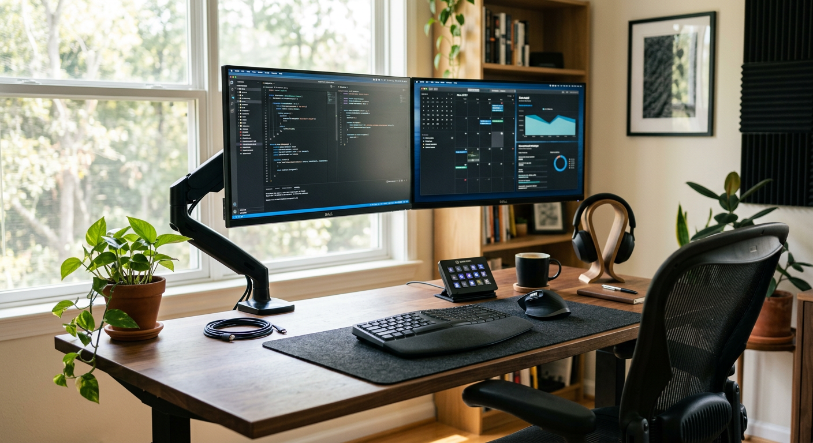

Best Monitor Risers
Updated for 2026 • Research-based guide for desk ergonomics and cleaner layouts.
Disclosure: As an Amazon Associate, we may earn from qualifying purchases.

Monitor risers are one of the fastest upgrades for desk comfort because they solve two common problems at once: poor screen height and lost desk space. A good riser can improve line-of-sight posture and create room underneath for keyboards, notebooks, docking hubs, or accessory storage. The best choice depends on your monitor weight, stand footprint, and desk depth—not hype specs.
Quick picks by use case
- Best overall riser: balanced height + footprint — Check on Amazon
- Best budget option: simple stable lift for tighter budgets — Check on Amazon
- Best with storage: better desk utility under the stand — Check on Amazon
Comparison chart
Use this quick grid to pick the right option for your desk constraints.
| Type | Best for | Pros | Tradeoffs |
|---|---|---|---|
| Minimal flat riser | Simple single-monitor setups | Low cost, easy placement | Limited storage and adjustability |
| Storage riser (drawer/shelf) | Small desks and accessory-heavy workflows | Saves surface space, cleaner layout | Can reduce keyboard slide-in room |
| Wide dual-monitor platform | Dual-monitor productivity setups | Unified viewing height | Needs deeper/wider desk footprint |
How to choose the right riser
- Measure first: monitor stand width/depth, desk depth, and available side clearance.
- Target eye-level alignment: top third of screen near eye line is a useful baseline.
- Prioritize stability: wobble is a deal-breaker for daily use.
- Decide storage role: if your desk is cramped, under-riser space becomes high-value.
Why Trust This Guide
This guide is built around practical desk constraints (height, depth, cable flow, accessory density) and buyer-oriented decision factors. We focus on real setup outcomes, not inflated marketing claims.
Related guides
Cable management kits · Desk lamp vs light bar · Productivity blueprint
FAQ
Do monitor risers really improve posture?
They often help when monitors sit too low, reducing sustained neck flexion during long work sessions.
Are budget risers worth it?
Yes, if stable and correctly sized. Height and stability matter more than premium material.
Can I use a riser with dual monitors?
Yes—verify width and weight support. Some setups are better with two compact risers.